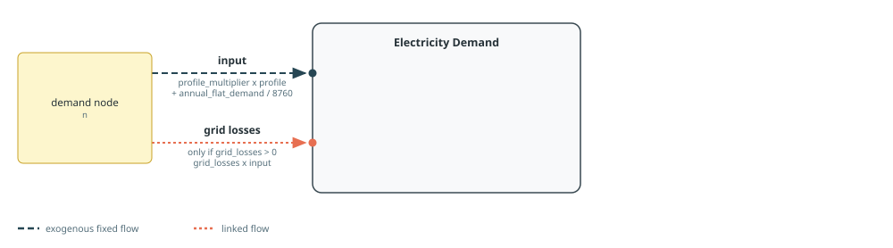
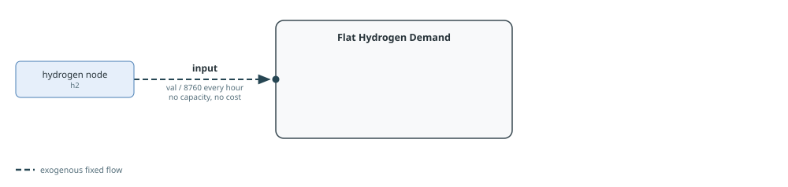
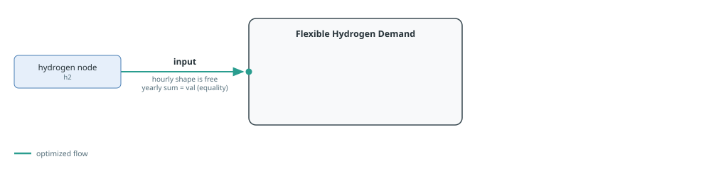
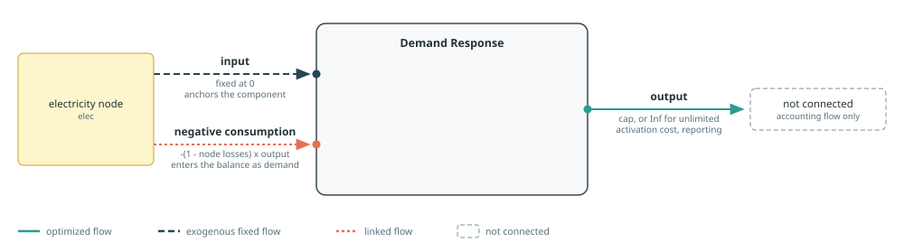

Demand And Flexibility
Demand-side builders cover fixed consumption, annually constrained flexible consumption, and virtual demand response. All components are created and connected immediately. Electric vehicles are covered separately in Electric Vehicles.
See Component Builders for shared naming, workbook, cost, capacity, and port conventions, and Tags And Post-Processing for tagging and reporting. Each section's diagram follows the conventions in Reading The Port Diagrams.
Electricity Demand
makedemand creates a fixed Nosy demand with the name "$cname $(n.name)". Its input profile is
\[d_t = c p_t + D / 8760,\]
where c is coeff, p_t is the workbook series selected by zone, and D is yearlyconstant. shift circularly shifts the workbook series before the flat term is added. Setting coeff=0 suppresses the workbook lookup, which is useful for self-contained examples and purely flat demand.
When gridlosses is non-zero, the builder adds a linked grid losses input proportional to demand. The value must lie in [0, 1).

Tags: :tech => cname, :zone => n.name, and the function tags electricity and demand.
The workbook series is read from sheet demand, column <zone>. With the standard hourly MW/MWh convention, yearlyconstant is in MWh/year.
See the One Country example for a complete model using this builder.
Posy2.makedemand — Function
makedemand(cname::String, zone::String, n::Node, s::Snapshot;
profile=nothing, coeff=1.0, shift::Int=0,
yearlyconstant::Real=0., gridlosses=0.,
)Build, connect and return a component based on the Demand template.
Arguments:
cname: component name prefix.zone: time series name in the time series workbook (demandsheet).n: demand node to connect the component to.s: snapshot to register the component in.profile: Hourly demand vector, or a scalar expanded across the simulation mesh. Ifnothing, readzonefrom thedemandsheet.coeff: multiplicative factor applied to the profile part of demand.shift: circular shift of demand profile (e.g. align first day to Monday).yearlyconstant: flat yearly demand term distributed over 8760 hours (yearlyconstant >= 0).gridlosses: optional proportional grid loss joint flow on demand input (0 <= gridlosses < 1).
Hydrogen Demand
makeflathydrogendemand creates a fixed input of val / 8760 at a hydrogen node. makeflexhydrogendemand instead creates a flexible input whose sum over the model year must equal val. Both builders therefore take an annual hydrogen-energy quantity, but only the flat builder fixes its hourly shape.
The generated name is "$cname $(n.name)". They do not read a workbook and do not add a cost or capacity behaviour.


Tags for both builders: :tech => cname, :zone => n.name, and the function tags hydrogen and demand.
Posy2.makeflathydrogendemand — Function
makeflathydrogendemand(cname::String, n::Node, val::Real, s::Snapshot)Build, connect and return a flat hydrogen demand component.
Arguments:
cname: component name prefix.n: hydrogen demand node to connect the component to.val: total yearly hydrogen demand. Must satisfyval >= 0.s: snapshot to register the component in.
Posy2.makeflexhydrogendemand — Function
makeflexhydrogendemand(cname::String, n::Node, val::Real, s::Snapshot)Build, connect and return a flexible hydrogen demand component.
Arguments:
cname: component name prefix.n: hydrogen demand node to connect the component to.val: total yearly hydrogen demand enforced throughYearlySum("input", val, :equal). Must satisfyval >= 0.s: snapshot to register the component in.
Demand Response
makedemandresponse represents demand response as negative consumption at the electricity node. Its positive output is an unconnected accounting flow used for capacity, activation cost, and reporting. A linked negative consumption input equal to -(1 - elec.losses) * output is connected instead, so the existing consumption components remain unchanged while demand response enters the nodal balance from the demand side. With zero node losses this is exactly -output. A numeric cap adds fixed response capacity, a JuMP variable or affine expression reuses an external response-capacity decision, nothing creates a new response-capacity decision, and Inf leaves response output unlimited. Because these last two cases are easy to confuse, cap=nothing emits a warning suggesting cap=Inf when unlimited capacity was intended.

cost is the activation cost per unit of the positive output flow and is applied directly. type selects the variable-cost category used by reports and defaults to :volDR.
The generated component is named "$cname $(elec.name)".
Tags: :tech => cname, :zone => elec.name, and the function tags virtual and demandresponse.
See the Demand Response example for a complete model using this builder.
Posy2.makedemandresponse — Function
makedemandresponse(cname::String, elec::Node, cap, cost::Real, s::Snapshot; type::Symbol=:volDR)Build, connect and return a demand response component represented as negative consumption.
The positive output is an unconnected accounting flow used for capacity, cost, and reporting. The connected negative consumption input is -(1 - elec.losses) * output; when node losses are zero, it is exactly -output. Consequently, activation enters the nodal balance on the demand side without modifying existing demand components.
Arguments:
cname: component name prefix.elec: electricity node to connect the component to.cap: Response capacity. A number fixes capacity, a JuMPVariableReforAffExprreuses that expression,nothingcreates a capacity decision, andInfleaves output unlimited.nothingemits a warning to distinguish it from unlimited capacity.cost: demand response activation cost coefficient.s: snapshot to register the component in.type: variable cost label used for reporting (default:volDR).